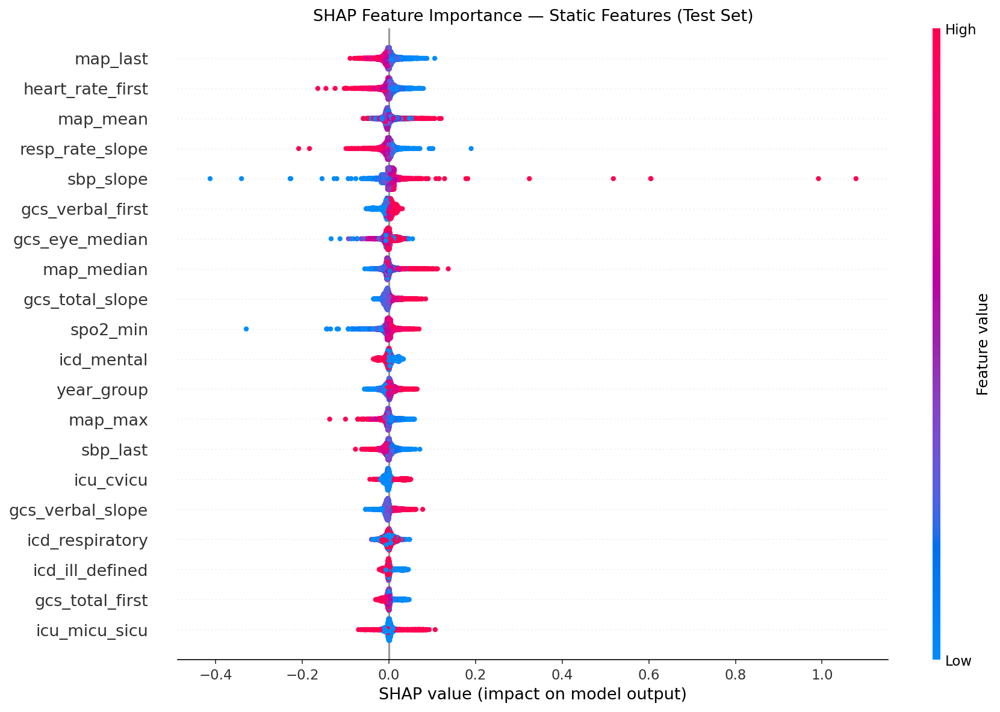
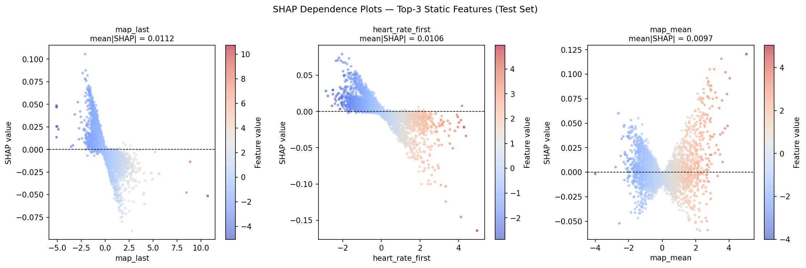
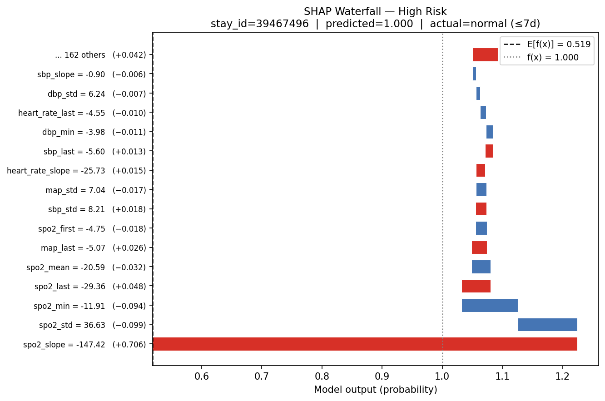
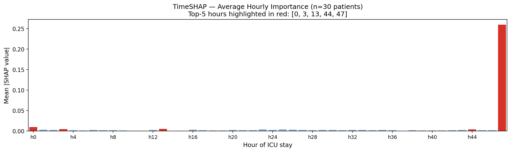
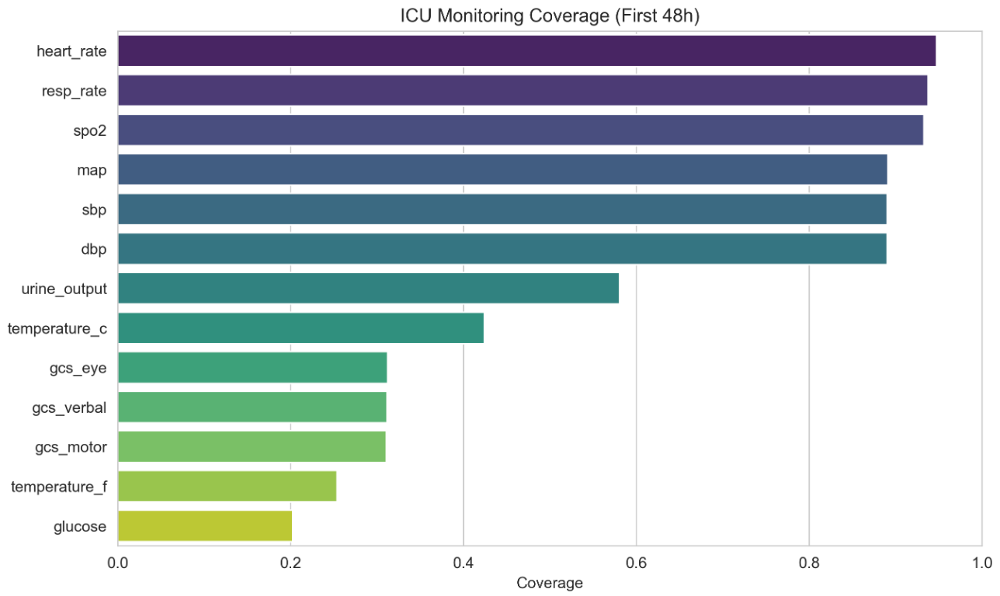
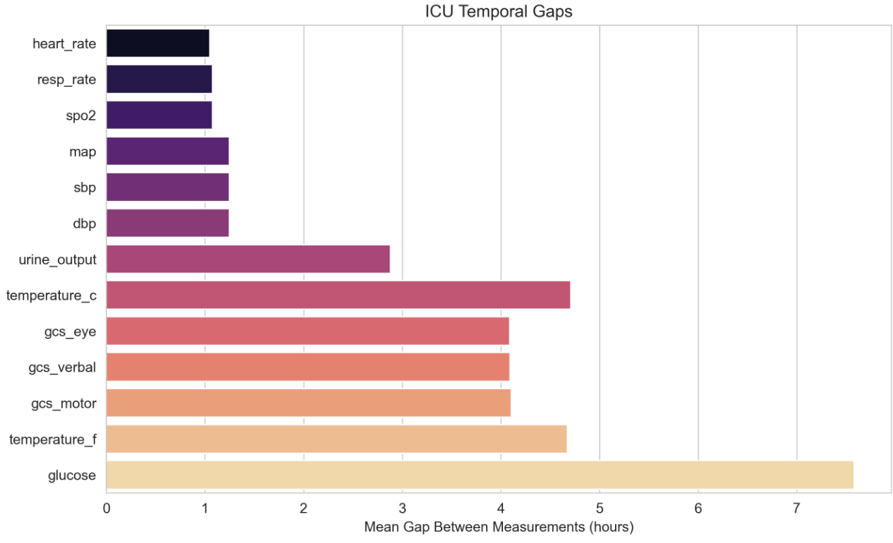
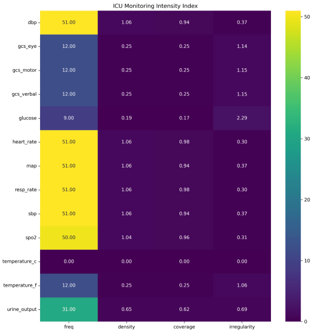
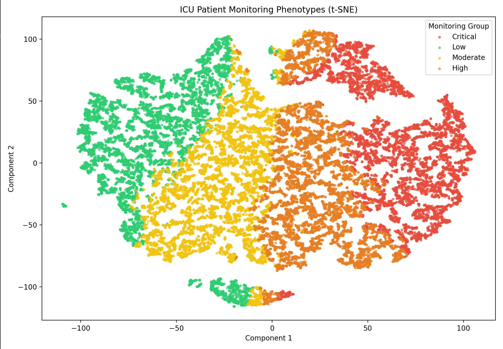

Progress Presentation #2
ICU Length-of-Stay Prediction
From a finalized GRU baseline to text embeddings, full explainability, time-series monitoring analysis, and a first prototype-retrieval model.
ICU stays analysed
held-out patients
stayed > 7 days
negative : positive
ICU beds are among the most expensive and scarce hospital resources. Predicting early which patients will stay longer than 7 days enables proactive resource planning — before the long stay actually unfolds.
los_gt7 — LOS > 7 dayspos_weight ≈ 3.2 in the loss| Time-series branch | GRU over 48h × 13 vitals |
| Static branch | 177 features → dense (32d) |
| Text branch | BioClinicalBERT → 32d Sec. 2 |
| Optimizer | Adam (lr = 1e-3) |
| Loss | BCEWithLogitsLoss (pos_weight) |
| Regularization | Dropout · early stopping |
Class imbalance: pos_weight ≈ 3.2 compensates the 23.6% positive rate, prioritising recall on long-stay patients — appropriate for clinical screening.
| Metric | Value | Note |
|---|---|---|
| Precision | 0.564 | 56% of predicted long stays correct |
| Recall | 0.701 | catches 70% of actual long stays |
| F1 Score | 0.625 | harmonic mean |
| AUROC | 0.845 | ranking / discrimination |
| AUPRC | 0.638 | key metric on imbalanced data |
Strong ranking ability (AUROC 0.845), competitive with published ICU LOS benchmarks. Recall is prioritised over precision via pos_weight — the right trade-off for clinical screening.
This configuration is now fixed as the baseline (full cohort, text branch enabled) against which the prototype model in Section 5 is measured.
BioClinicalBERT (emilyalsentzer/Bio_ClinicalBERT) is a BERT transformer pre-trained on MIMIC-III clinical text. From a free-text section it produces a single 768-dim vector — a semantic summary where clinically similar findings lie close together, regardless of wording.
"bilateral pleural effusions" ≈ "fluid accumulation in both lungs"
"no acute cardiopulmonary process" ≈ "unremarkable chest X-ray"
Inference only: BioClinicalBERT weights stay frozen — only the projection layer is trained. The model never "reads" text; it learns which numeric patterns in the embedding correlate with long stays.
5,367 stays
25,248 stays
In-model projection: Linear(1536 → 32) → ReLU → Dropout, then fused with the GRU state (64) and static branch (32). Only the earliest valid report (within 48h) per stay is used.
Patients without a CXR report receive a zero vector (1536 × 0.0) for the text branch. Crucially, there is no explicit has_cxr flag — an earlier version tested one and performed worse.
With an explicit flag the model learns a shortcut: when has_cxr=0 it ignores the text branch entirely. Since 82.5% of training cases have no CXR, this signal dominates training — the projection layer barely receives gradients for the 17.5% with real embeddings, so the text branch is poorly trained and contributes nothing.
Without a flag, the model must implicitly learn that a zero vector is uninformative. The gradient for a zero input is structurally small (Linear(0) = 0), so the projection layer focuses its learning capacity on the 17.5% of patients with genuine embeddings.
| Metric | A · Full cohort 30,615 | B · CXR only 5,367 |
|---|---|---|
| Accuracy | 0.8019 | 0.7935 |
| Precision | 0.5643 | 0.6245 |
| Recall | 0.7008 | 0.6752 |
| F1 Score | 0.6252 | 0.6489 |
| AUROC | 0.8451 | 0.8275 |
| AUPRC | 0.6375 | 0.6539 |
With a real report the model discriminates more precisely — fewer false alarms (precision 0.625 vs 0.564).
The ×5.7 larger training set outweighs missing text — ranking ability benefits more from data volume than from complete embeddings.
Config A is preferred for practice (covers all patients). Config B is an ablation proving the CXR embedding carries an independent prognostic signal on its own.
| Criterion | LIME | SHAP + TimeSHAP |
|---|---|---|
| Approach | Local linear fit | Shapley values (game theory) |
| Stability | Unstable | Consistent |
| Scope | Local only | Global + local |
| Time series | Steps independent | Each of 48 hours = 1 player |
Decision: LIME excluded. Instability is unacceptable in a clinical context where reproducibility is required for trust and regulatory compliance.
shap.GradientExplainer (backprop gradients)
Figure: visuals_presentation_2/explainability_p2_img1.png| # | Feature | mean|SHAP| |
|---|---|---|
| 1 | map_last | 0.0112 |
| 2 | heart_rate_first | 0.0106 |
| 3 | map_mean | 0.0097 |
| 4 | resp_rate_slope | 0.0090 |
| 5 | gcs_verbal_first | 0.0088 |
Assessment: MAP (blood pressure), heart rate at admission, and GCS (consciousness) are established ICU severity indicators. The model learned real medical patterns — not statistical artefacts.

Figure: visuals_presentation_2/explainability_p3_img1.pngLow MAP (hypotension) increases predicted risk.
High heart rate at admission increases risk.
Low average BP over 48h correlates with longer stay.

Figure: visuals_presentation_2/explainability_p3_img2.pngspo2_slope = −147 (a 48h SpO₂ trend) contributed SHAP +0.706, pushing the prediction to its maximum. Root cause: a likely sensor artefact — the model cannot tell real deterioration from data noise.
Winsorize aggregated vital features (clip to p1–p99 of the training set, fit on train only). This would clip spo2_slope = −147 to ≈ −5. Not yet implemented

Figure: visuals_presentation_2/explainability_p4_img1.pngThe admission hour is the most important — the initial patient state drives LOS.
ffill propagates the last measurement into h47, so zeroing it removes the most recent state → largest SHAP. Background = zeros (not mean), since ffill/bfill makes patient values ≈ mean. Fix: explicit missingness flags. Not implemented
| Issue | Root Cause | Recommended Fix |
|---|---|---|
| h47 dominance | ffill/bfill creates correlated hours | Per-hour missingness flags |
| FP spo2_slope = −147 | Sensor artefact not filtered | Winsorize to p1–p99 (train) |
| ECE = 0.29 (overconfident) | Probabilities not calibrated | Post-hoc Platt scaling |
Characterize how ICU variables are monitored during the first 48h after admission, across ~30,000 ICU stays using Chartevents + Outputevents.
| Regime | Interval |
|---|---|
| Continuous | ≤ 1.5 h |
| Frequent | 1.5 – 4 h |
| Intermittent | 4 – 12 h |
| Sparse | 12 – 24 h |
| Episodic | > 24 h |
Goal: quantify temporal monitoring intensity across clinical variables.

Figure: visuals_presentation_2/monitoring_p2_img1.pngVital signs (HR, RR, SpO₂, BP) cover nearly the entire stay.
Urine output & temperature are moderately monitored.
Neurological assessments (GCS) and glucose have limited temporal coverage.

Figure: visuals_presentation_2/monitoring_p3_img1.pngImplication: ICU time series are inherently irregular — uniform-sampling assumptions are inappropriate, and monitoring intensity itself may be clinically meaningful.
| Heart Rate | 98.5% |
| Respiratory Rate | 97.8% |
| SpO₂ | 97.6% |
| Blood Pressure | 92.8% |
| Temperature | 74.8% |
| Urine Output | 50.7% |
| GCS | 9.0% |
| Glucose | 3.2% |

Figure: visuals_presentation_2/monitoring_p5_img1.png
Figure: visuals_presentation_2/monitoring_p6_img1.pngPMI = 0.4·Zfreq + 0.2·Zcoverage + 0.2·Zmaxfreq + 0.2·Zfeatures
The clusters form a continuous gradient of monitoring intensity — confirming that measurement availability is not random but reflects patient condition and clinical workflow.
Continuous (HR, RR, SpO₂, BP) · Periodic (Temp, Urine) · Intermittent (GCS, Glucose). ICU variables are monitored very differently.
Availability reflects clinical workflow, monitoring technology, and patient condition — not random missingness.
Time series are inherently irregular; uniform-sampling assumptions are inappropriate; monitoring intensity itself is informative.
Connection: this directly motivates the open explainability fixes (missingness flags for the h47 artefact) and the prototype model's reliance on learned embeddings rather than raw uniform time steps.
Core idea: instead of classifying directly from the embedding, PRD-Net asks — how similar is this patient to clinically comparable patients who stayed long vs. short?
Prototypes = inverse-distance weighted mean of the 20 nearest peers per class — nearer peers count more.
Same ICD + ICU + age filter applied end-to-end (train, val, test) for a consistent prototype structure.
Every prediction is grounded in concrete, retrievable peer patients — intrinsic interpretability.
| Hard / Soft Filter | K | Acc | F1 |
|---|---|---|---|
| ICU + ICD · Age ±10 | 20 | 0.800 | 0.586 |
| + Admission type | 20 | 0.804 | 0.602 |
| + GCS ±3 | 20 | 0.806 | 0.586 |
| + GCS ±3 | 15 | 0.802 | 0.576 |
Extra filters shrink the peer pool and force fallbacks. ICD + ICU + age already captures the relevant structure — the GRU embeddings handle the rest.
With 23.7% long-stay (ratio ≈ 3.23:1), a naive model hits ~76% accuracy by always predicting short. Setting pos_weight = 16560/5130 ≈ 3.23 makes each false negative weigh 3.23× a false positive.
Final config: ICU + ICD + Age ±10, K=20, pos_weight 3.23 → F1 0.624 · AUROC 0.839 · AUPRC 0.627.
| Metric | Baseline GRU | PRD-Net |
|---|---|---|
| F1 Score | 0.625 | 0.624 |
| AUROC | 0.845 | 0.839 |
| AUPRC | 0.638 | 0.627 |
| Model | AUROC | AUPRC |
|---|---|---|
| Wu — SAPS II | 0.670 | 0.462 |
| Wu — Random Forest | 0.737 | 0.520 |
| Wu — GBDT (best) | 0.747 | 0.536 |
| PRD-Net (ours) | 0.839 | 0.627 |
Verdict: PRD-Net matches the baseline within ~1pp on every metric while adding intrinsic peer-based interpretability — and beats the best Wu model by ≈ 9pp AUPRC using structured features alone.
Replace weighted BCE with Focal Loss — penalises hard, misclassified cases more. Targets borderline patients near the 7-day threshold.
Embeddings are currently frozen. Fine-tuning the encoder jointly lets it learn representations optimised for peer retrieval — architecturally the largest lever.
Incorporate clinical free-text notes as an additional modality — connecting back to the BioClinicalBERT work in Section 2.
GRU multi-branch model: AUROC 0.845, F1 0.625 on 4,593 test patients.
BioClinicalBERT CXR embeddings carry an independent prognostic signal (ablation B).
SHAP + TimeSHAP validate clinical patterns; 3 data-quality fixes identified.
Monitoring analysis shows non-random missingness across variable types.
PRD-Net reaches AUROC 0.839 with intrinsic peer-based interpretability.
End-to-end training, calibration (Platt), winsorization, and text fusion into the prototype.